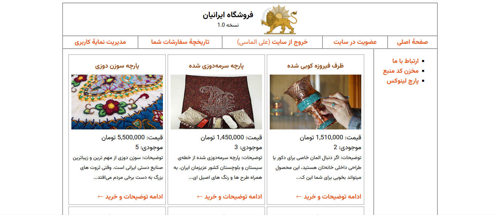

⚠️ نکته خیلی مهم:
این پروژه و فایلهای راهنماش هنوز کامل نشده!
این پروژه دقیقا همون پروژهای هست که
کتاب طراحی وب پایه یازدهم فنی و حرفهای رشته شبکه و نرمافزار
کامپیوتر
از صفحه ۱۶۲ به بعد شروع کرده. (عین همونه منتهی با کمی تغییر و خوشگلاسیون
بیشتر 😁)
دوستان هنرستانی رشته کامپیوتر اگه برای این درس هنرآموز خوبی
داشته باشن (مثل هنرآموز بنده
جناب آقای رحیمیان)، درجا عاشق این
کتاب و مباحثش میشن 🫠 (البته بجز پودمان اولش که تقریبا هیچ ربطی به وب نداره
🤐).
این پروژه در کنار تدریس کتاب جلو رفته و اکثر مطالبی که در کتاب درسی گفته شده، بطور همزمان در این پروژه هم بکار گرفته شده و وجود داره. 🌱
در کنار همه اینها، من دوتا فایل راهنما تو این مخزن کنار کد های این پروژه میذارم:یکیش راهنمای کلی هستش (یه چیزی حالت جزوه مختصر و مفید از کتاب با زبون خودمونی) و اون یکیش راهنمای کد های این پروژه هست (کد هایی که ممکنه براتون سوال ایجاد کنه یا داخل کتاب گفته نشده)
خیلی راحت! این فایل zip رو دانلود کنین و داخل فولدر www در مسیر نصب نرمافزار WAMP تون استخراجش کنین (extract اش کنین). بقیهش هم که بلدین دیگه.
اگر هم از XAMPP استفاده میکنین، داخل پوشه htdocs در مسیر نصب XAMPP تون اکسترکتاش کنین.
نکته:
حواستون باشه فایل دیتابیس.sqlهم داخل دیتابیس MySQL تون Import کنین.
فایل راهنما بیشتر جنبهی راهنمایی اجزا و کدهایی که در این پروژه استفاده شده رو داره. اگر جایی در حین خوندن کد ها، گیج شدین یا نفهمیدین فلان قسمت از کد دقیقا چیکار میکنه میتونین بیاین و خلاصه توضیحاتش رو اینجا بخونین. 😊
من سعی کردم توضیحات تمام بخش هارو اینجا بنویسم ولی اگه جایی از دستم در رفته بود یا اگه خودتون سوالی داشتین میتونین از طریق لینکهای من یا بخش پرسش و پاسخ (نیاز به اکانت GitHub داره) ازم بپرسین. خوشحال میشم کمکتون کنم. 😃🤝
دوستان اگه این کدها یا فایل راهنما کمکتون کرد یه قسمت از کتاب رو متوجه بشین، یا اگه تونستین باهاش نمره کار عملیتون رو بگیرین 😉، لطفا من رو هم با یه دونیت (حمایت مالی) خوشحال کنید.
خیلی از وبسایت ها، این پروژه رو بصورت غیر رایگان گذاشتن. من علاقهای به گرفتن پول در ازای کاری که همه میتونن بکنن ندارم، ولی اگه دونیت کنین، خیلی خیلی ممنونتون میشم. 🤍
⚠️ یادآوری مهم:
این راهنما ها و توضیحات اصلا مطالب خوبی برای خوندن برای امتحانات مدارس یا کنکور نیستن. سعی کنین برای امتحان مدارس یا کنکور، خود کتاب درسی رو مطالعه کنین.
برای رفتن به بخش راهنماها و توضیحات اینجا کلیک کنید.
نکته:
پیشنهاد میکنم برای کنکور از کتاب های آقای میرباقری اسفتاده کنین. 📚
توجه کنین، این یک تبلیغ نیست.
این پروژه تحت پروانه CC BY-NC-SA 4.0 هست. شما عزیزان میتونید با ذکر منبع میتونین به آزادی برای استفاده های غیرتجاری از این پروژه، کد های این پروژه و فایل های راهنمای این پروژه تحت شرط استفاده مجدد از همین پروانه استفاده کنین.
این پروژه در گیتهاب آپلود شده و تمامی کد ها برای همه افراد جهت استفاده و بررسی موجود هستن.